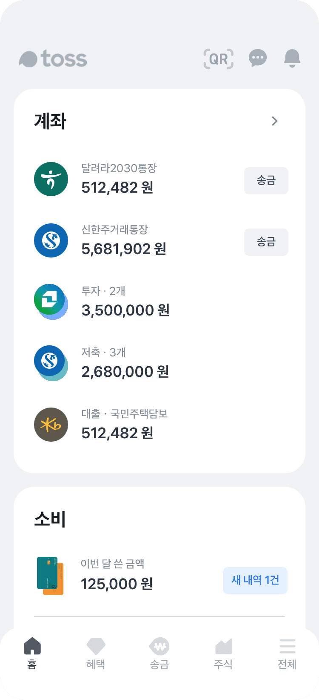

금융의 모든 것
토스에서 쉽고 간편하게

내 모든 금융 내역을 한눈에 조회하고 한 곳에서 관리하세요.
이제껏 경험 못 했던 쉽고 편리한 금융 서비스,
토스와 함께라면 당신의 일상이 새로워질 거예요.
홈 • 소비
내 돈 관리,
지출부터 일정까지
똑똑하게



토스에 계좌와 카드를 연결해 보세요.
계좌 잔액, 대출•투자 내역은 기본,
일자별 소비와 수입까지 한 번에 볼 수 있어요.
송금
간편하고 안전하게
수수료는 평생 무료로,
이런 송금 써보셨나요?
평생 무료 송금
토스 평생 무료송금으로
모두의 금융에 자유를
누구에게 보내든 은행 상관없이,
이제 토스와 함께 수수료 걱정 없이 송금하세요.

자동이체 예약
은행 점검 시간,
기다릴 필요 없어요.
은행 점검 시간에는 자동이체 예약을 이용해보세요.
점검 시간이 끝나면 토스가 알아서 송금해드릴게요.

사기계좌 조회
송금 전 사기 내역 조회로
피해를 미리 방지할 수 있어요
송금 전 토스가 알아서 사기 내역 조회를 해드려요.
상대방의 연락처 또는 계좌가 사기 계좌인지 조회해
안전하게 송금할 수 있어요.

대출
여러 은행의 조건을
1분 만에
확인해보세요
한도는 높게,
금리는 낮게,
부담은 적게.
앉은 자리에서 여러 은행의 한도와 금리를 비교하고
내게 꼭 맞는 대출을 찾아보세요.
신용, 비상금, 대환, 주택담보대출 모두 가능해요.

신용
금융 생활의 첫 걸음,
신용점수를 미리
무료로 관리하세요

내 신용점수
언제 어디서든, 원할때 간편하게
KCB, NICE 신용점수를 한 곳에서 확인할 수
있어요.

신용관리 알림
신용점수에 변동이 생기면 토스가 알람을 보내드려요.
나의 신용점수가 바뀔 때마다 바로 확인하세요.

신용점수 올리기
통신비, 일반 납부내역 등의 서류를
토스에서 바로 제출해 신용점수를 올릴 수
있어요.

신용관리 팁
신용점수 관리가 막막하다면?
신용관리 팁 콘텐츠를 읽어보세요.
투자
투자,
모두가 할 수 있도록

별도의 앱 설치 없이 토스에서 바로,
토스 증권에서 나만의 투자를 바로 시작해보세요.
꼭 필요했던 금융
토스로
나에게 딱 맞게

내 문서함 공공문서 확인부터 납부까지 한 번에
건강검진, 국가장학금 신청, 교통범칙금 • 과태료 납부.
그동안 종이로 받았던 문서들 꼼꼼히 챙기느라 고생했어요.
앞으로는 토스 내 문서함에서 간단히 받아보고 납부할 수 있어요.


또래보다 보험료는 적절하게 내고 있는지,
낸 만큼 보장받고 있는지 확인해보세요.
전문가와의 상담을 통해 내게 딱 맞는 보험을
추천 받고, 병원비를 간편하게 청구할 수 있어요.
보험
조회부터 상담,
병원비 돌려받기를 간편하게

내 부동산 자동차
정기적으로 관리해보세요.
집과 자동차의 공통점은 잘 사서, 잘 관리하고, 잘 팔아야 한다는 것.
시세조회부터 아파트 관리비 납부, 자동차 보험료 조회까지 부동산과
자동차 관리도 토스에서 시작해 보세요.